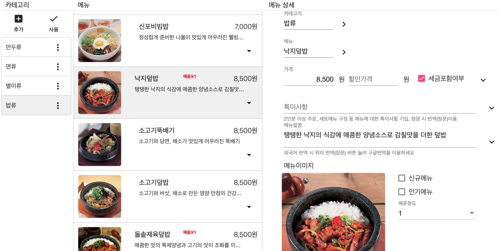
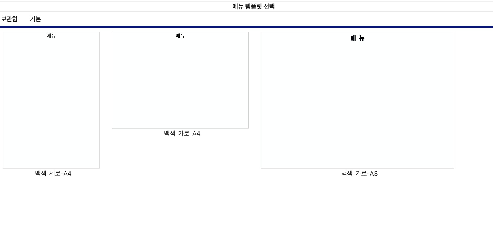
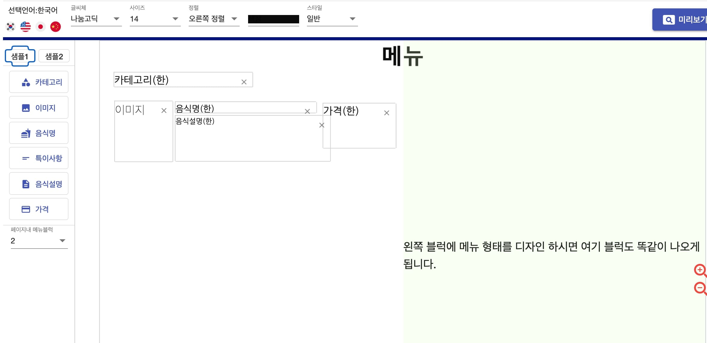
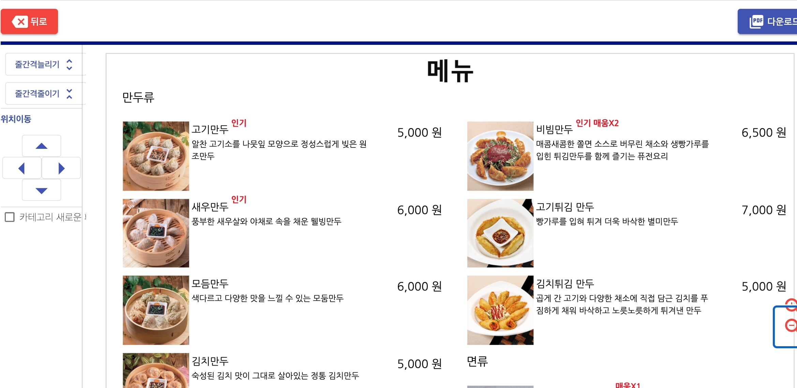
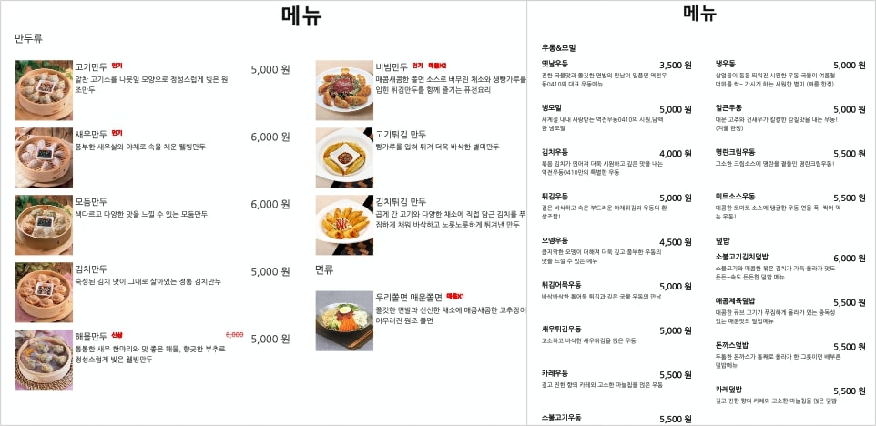

본 서비스를 이용하시면.
-
식당, 카페, 바 등 모든 업소에서 간편하게 메뉴를 관리 할 수 있습니다.
-
제공하는 템플릿 중에 마음에 드는 템플릿을 선택할 수 있습니다.
-
여러분이 원하는 디자인으로 메뉴판을 구성할 수 있습니다.
-
쉽게 메뉴판으로 출력할 수 있습니다.
-
메뉴등록 - 템플릿 선택 - 메뉴판 디자인 - 출력 순으로 이용할 수 있습니다.
-
푸파 서비스 이용하기 (PC에서 서비스를 이용하세요.)
1. 간편하게 메뉴를 등록합니다.

-
arrow_right카테고리 별 메뉴가 나열되서 쉽게 확인할 수 있습니다.
-
arrow_right이벤트를 진행하여 할인가격을 입력 할 수 있습니다.
-
arrow_right팝업창을 통해 메뉴를 영어, 일본어, 중국어로 번역이 됩니다.
-
arrow_right필요하다면 간편하게 음식 사진을 등록 할 수 있습니다.
-
arrow_right신규메뉴, 인기메뉴, 맵기등 표시할 수 있습니다.
-
arrow_right여러가지 메뉴에 대한 설명을 추가 할 수 있습니다.
-
arrow_right고객에게 필요한 여러가지 음식 정보를 입력할 수 있습니다.
2. 마음에 드는 템플릿 을 선택하세요.

-
arrow_right메뉴판의 기본이 되는 템플릿이 많이 있고 지속적으로 추가됩니다.
-
arrow_right원하는 사이즈, 모양에 따라 선택 할 수 있습니다.
-
arrow_right원하시는 디자인이나 템플릿이 있다면 문의 하시기 바랍니다.
3. 원하는 형태로 디자인합니다.

-
arrow_right선택한 템플릿을 바탕으로 메뉴판 디자인을 합니다.
-
arrow_right메뉴명, 가격, 이미지 등을 마우스로 원하는 위치에 배치합니다.
-
arrow_right글씨체, 사이즈, 정렬등 다양한 옵션이 있습니다.
-
arrow_right외국어(영어, 일본어, 중국어)로 표시할 수 있습니다.
-
arrow_right미리보기를 통하여 메뉴판을 미리 확인하세요.
4. 미리보고 pdf 형태로 추출합니다.

-
arrow_right프린트 할 떄와 동일한 디자인으로 보여집니다.
-
arrow_right줄 간격이나 위치를 이동 을 할 수 있습니다.
-
arrow_right완료하면 pdf 파일의 메뉴판을 다운로드 합니다.
5. pdf 파일로 메뉴를 출력합니다.

-
arrow_right바로 출력하여 사용하시면 됩니다.
-
arrow_right변경 시마다 새로 출력하셔서 꺠끗하게 사용하세요.
-
arrow_right여러가지 활용분야가 많습니다.
vertical_align_top